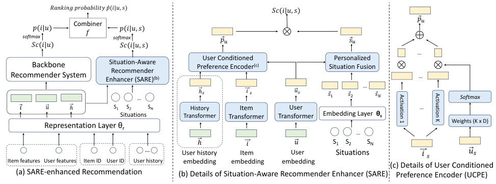

A Situation-aware Enhancer for Personalized Recommendation (情境感知的个性化推荐增强器)
- 会议/期刊: DASFAA 2024
- 作者与机构: Jiayu Li, Peijie Sun, Chumeng Jiang, Weizhi Ma, Qingyao Ai, Min Zhang（清华大学 Quan Cheng Lab / 清华 AIR）
- 推荐链路定位: 精排（Impression List Ranking）
- 研究方向: 协同过滤与双塔召回 / CTR 预估与特征交叉
- 论文原文: 论文原文链接
- 开源代码: 开源代码仓库链接
TL;DR (1分钟核心速览)
现有推荐系统把情境（时间、地点、环境）与用户/物品放在同一层级做拼接或特征交叉，只能建模"情境—用户""情境—物品"的二元关系，无法刻画情境对"用户—物品关联"本身的动态调制。本文提出把情境视为交互的前置条件 (precondition)，设计可插拔双塔增强器 SARE：用 UCPE 以用户为条件调制物品表征、用 PSF 以用户为查询做情境注意力融合，再以置信度加权调和平均与骨干融合。在 MIND 与 KuaiRand-1K 的 Impression-List 全排序协议下，SARE 挂载 5 个情境感知骨干与 2 个 ID 骨干均稳定提升，xDeepFM+SARE 在 KuaiRand 上 NDCG@3 由 0.6226 升至 0.6405（+2.87%）。
Background & Motivation (背景与核心矛盾)
- 主流范式: 情境感知推荐（FM/AFM/xDeepFM/DIN/CAN 及 DIF-SR、CARCA、MEANTIME、Mojito 等时间感知模型）将情境属性与用户、物品特征平级拼接，通过特征交叉或序列注意力学习"情境—用户""情境—物品"的关联。
- 前人局限: 其一，平级建模只能学到情境与单侧实体的关系，无法表达"同一用户在不同情境下对同一物品偏好翻转"这一关系级调制；其二，情境的感知个性化（同一客观情境对不同用户语义不同）与影响个性化（同一情境对不同用户偏好改变幅度不同）被固定 embedding 抹平。
- 核心洞察 (Key Insight): 情境是交互发生的"背景/前提"，其作用层级高于用户与物品的固有属性；把情境从用户/物品表征中分离出来，才能显式建模它对 user-item 关联的动态、个性化影响，同时保留"有/无情境"两路预测以便在情境不可靠时降权。
- 本文切入点: 不改动骨干，另建一条以情境为条件的轻量双塔旁路，与骨干输出做置信度自适应融合。
Method (核心方法设计)
1. 整体框架 (Overall Architecture)
给定用户 \(u\)、候选列表\(\{i_1,\dots,i_M\}\)与\(N\)个情境属性\(s=\{s_1,\dots,s_N\}\)，SARE 与骨干共享表征层\(\theta_r\)得到\(\vec{u},\vec{i},\vec{h}\)（历史可选），再经线性变换\(W_u,W_i,W_h\)投影到情境感知空间得\(\vec{u}_s,\vec{i}_s,\vec{h}_s\)，情境属性经\(\theta_s\)嵌入为\(\{\vec{s}_n\}\)。随后 UCPE 以\(\vec{u}_s\)为条件编码\(\vec{i}_s\)（及\(\vec{h}_s\)）得个性化偏好\(\vec{p}_u\)，PSF 以\(\vec{u}_s\)为 query 对\(\{\vec{s}_n\}\)做交叉注意力得个性化情境\(\vec{s}_u\)，二者内积给出\(Sc(i|u,s)\)。骨干给出\(Sc(i|u)\)，两路经 softmax 转概率后用置信度加权调和平均融合为\(\hat{p}(i|u,s)\) 并排序。训练端到端，骨干与 SARE 使用独立学习率。
flowchart TD
A["用户/物品/历史 + N 个情境属性"] --> B["共享表征层 θr + 线性投影 W"]
B --> C["UCPE: 用户条件激活集成 → p_u"]
B --> D["PSF: 用户查询交叉注意力 → s_u"]
C --> E["内积 Sc(i|u,s)"]
D --> E
A --> F["骨干 RecSys → Sc(i|u)"]
E --> G["置信度加权调和平均融合"]
F --> G
G --> H["Impression List 排序"]
2. 关键设计拆解 (Key Designs)
-
User-Conditioned Preference Encoder (UCPE，以用户为条件调制物品表征)：痛点是把情境与物品一起拼接后，物品表征对所有用户共享，无法体现"情境影响因人而异"。UCPE 借鉴条件序列建模，用用户向量生成 \(K\) 个激活函数的组合权重，再对物品表征的激活输出加权求和： $\(\hat{\vec{u}}=\mathrm{softmax}(W_c\vec{u}_s+\vec{b}_c),\quad \vec{p}_u=\sum_{j=1}^{K}\hat{u}_j\cdot A_j(\vec{i}_s)\)$ 其中 \(W_c\in\mathbb{R}^{K\times D}\)。直觉是：不同激活函数提供互补的非线性基，用户条件决定"用哪组基去读这个物品"，等价于为每个用户定制一个轻量非线性编码器，从而在几乎零额外参数下注入个性化。历史向量\(\vec{h}_s\)走同构 UCPE（共享\(\{A_j\}\)、独立权重），两路输出相加。
-
Personalized Situation Fusion (PSF，个性化情境感知)：痛点是同一客观情境（如 23 点）对早睡者与夜猫子语义不同，固定情境 embedding 无法区分。PSF 用用户向量作 query 对情境属性做交叉注意力，自适应聚合多属性情境： $\(\vec{s}_u=\mathrm{Attention}(W_s\vec{u}_s,S,S)=\mathrm{softmax}\!\left(\frac{(W_s\vec{u}_s)S^{\top}}{\sqrt{D}}\right)S\)$ 直觉是注意力权重即"该用户此刻更关注哪个情境维度"，把客观情境翻译成用户主观感知的情境，同时自动处理小时/时段、星期/是否周末等依赖属性间的冗余。
-
置信度感知融合、损失与推理开销：情境描述常不完整，故不直接用 \(Sc(i|u,s)\)，而以加权调和平均融合两路概率： $\(\hat{p}(i|u,s)=\frac{c_u+c_{u,s}}{c_u/p(i|u)+c_{u,s}/p(i|u,s)},\quad c_u=1-\frac{1}{\max_j p(i_j|u)+1}\)$ 置信度由列表内概率分布的尖锐度（不确定性）反推。损失为 \(\mathcal{L}=\mathcal{L}_{rb}+\lambda_s\mathcal{L}_{sb}+\lambda_p\mathcal{L}_p\)：前两项分别是骨干与 SARE 打分的 session-level pairwise BPR（列表内正负样本 softmax 加权），\(\mathcal{L}_p\)为最终概率的交叉熵对齐项。负样本来自 Impression 列表内未点击项（免额外负采样）。额外参数至多\(4D^2+2KD+2K\)，远小于嵌入矩阵\(D(|\mathcal{U}|+|\mathcal{I}|)\)，推理仅多一次双塔内积。
Experimental Setup & Evaluation Protocol (实验设置与评估协议)
- 数据集与预处理: 过滤正交互少于 3 的用户与物品；MIND 随机采样 4 万用户；KuaiRand-1K 以 30 分钟间隔切分 Impression List。
| 数据集 | #Users | #Items | #Interactions | Click/Imp. | 特征/场景说明 |
|---|---|---|---|---|---|
| MIND | 40,000 | 25,545 | 332,756 | 1.076 | 新闻，1 用户属性/3 物品属性/4 情境属性，列表均长 46.9 |
| KuaiRand-1K | 1,000 | 487,974 | 2,763,334 | 12.430 | 短视频，25 用户属性/7 物品属性/4 情境属性，列表均长 29.6 |
- 数据划分与防穿越 (Splitting Strategy): 随机 8:1:1 比例划分（作者明确弃用时间线切分，以保证训练/测试情境同分布、比较公平）。
- 排名评测协议 (Ranking Protocol): Impression-List 全排序——列表内所有点击项须排在所有未点击项之前，指标 HR@3 / MAP@3 / NDCG@3，5 个随机种子取均值。
- 对比基线与超参设置: 情境感知骨干 FM/AFM/xDeepFM/DIN/CAN；SOTA 情境（时间）感知基线 DIF-SR/CARCA/MEANTIME/Mojito；ID 骨干 LightGCN/SASRec（fix+SARE 与 train+SARE 两种设定）。嵌入维度 \(D=64\)（CAN 因 induction 特征需更大），UCPE 用 11 个激活函数，配对 t 检验\(p<0.05/0.01\)。
Key Experimental Results (实验关键数据)
1. 主实验对比 (Main Results)
| 骨干 (情境用法) | MIND HR@3 | MIND NDCG@3 | KuaiRand HR@3 | KuaiRand NDCG@3 |
|---|---|---|---|---|
| FM (Concat) | 0.4774 | 0.3407 | 0.8717 | 0.6221 |
| FM + SARE | 0.4819* | 0.3444** | 0.8771** | 0.6308** |
| AFM (Concat) | 0.4780 | 0.3398 | 0.8758 | 0.6266 |
| AFM + SARE | 0.4797 | 0.3417* | 0.8789* | 0.6301* |
| xDeepFM (Concat) | 0.4825 | 0.3453 | 0.8733 | 0.6226 |
| xDeepFM + SARE | 0.4857* | 0.3504* | 0.8832** | 0.6405** |
| DIN (Concat) | 0.4834 | 0.3441 | 0.8700 | 0.6174 |
| DIN + SARE | 0.4821 | 0.3470 | 0.8761* | 0.6203 |
| CAN (Concat) | 0.4850 | 0.3459 | 0.8749 | 0.6218 |
| CAN + SARE | 0.4881 | 0.3493* | 0.8762 | 0.6310** |
| LightGCN (w/o 情境) | 0.4471 | 0.3125 | 0.8589 | 0.6043 |
| LightGCN (train+SARE) | 0.4599** | 0.3184** | 0.8661** | 0.6137** |
| SASRec (w/o 情境) | 0.4670 | 0.3301 | 0.8594 | 0.6023 |
| SASRec (train+SARE) | 0.4757** | 0.3385** | 0.8643* | 0.6052* |
xDeepFM+SARE 相对最强情境感知基线（MIND 上 CARCA、KuaiRand 上 MEANTIME/Mojito）在 HR@3 与 NDCG@3 上均全面领先（图 3）。
2. 消融实验 (Ablation Study)
| 变体 (xDeepFM / CAN) | MIND NDCG@3 | KuaiRand NDCG@3 | 说明 |
|---|---|---|---|
| 骨干（虚线基准） | 0.3453 / 0.3459 | 0.6226 / 0.6218 | 情境仅拼接 |
| -cb（仅用 SARE 输出） | 显著下降（降幅最大） | 显著下降 | 失去骨干直接监督 |
| -ucfe（全局权重替代） | 下降 | 下降 | 去掉偏好个性化 |
| -psf（全局权重替代） | 下降 | 下降 | 去掉情境感知个性化 |
| -conf（无权调和平均） | 小幅下降 | 小幅下降 | 去掉置信度自适应 |
| SARE 完整 | 0.3504 / 0.3493 | 0.6405 / 0.6310 | — |
3. 关键实验发现 (Key Findings)
- "分离情境"胜过"复杂交叉"：仅给最简单的 FM 挂上 SARE，在 KuaiRand 上 NDCG@3 即从 0.6221 升至 0.6308（+1.40%），超过所有平级建模的复杂骨干，说明瓶颈在建模视角而非网络容量。
- 融合方式比单侧增强更关键：消融中去掉骨干输出（-cb）造成最大跌幅，因为骨干失去直接监督、SARE 的情境噪声也无从校正；而置信度加权（-conf → SARE）仍带来稳定增益，验证"情境不可靠时自动降权"的设计有效。
- 非序列骨干受益更大、ID 骨干亦可白嫖：SARE 在 FM/AFM/xDeepFM 上的提升普遍大于 DIN/CAN（后者历史建模已部分吸收情境信号）；LightGCN 在完全无情境输入下 train+SARE 仍将 MIND NDCG@3 从 0.3125 提至 0.3184（+1.89%），证明其作为通用插件的灵活性。
Highlights & Limitations (亮点、对比与审稿批判)
- 与代表作对比 (vs. Prior Work): 相较 xDeepFM/AFM 等把情境当普通特征做交叉，SARE 把情境提升为"条件"作用于 user-item 关联；相较 DIF-SR（直接预测情境）与 MEANTIME/Mojito（语义时间嵌入），SARE 不限定情境类型、不依赖序列结构，且以用户为条件实现双重个性化；相较 DSAIN 的多行为交互层，SARE 是模型无关的旁路插件而非专用网络。
- 可迁移亮点: ① UCPE 的"用户条件激活集成"是极低成本的条件化技巧（仅 \(K\times D\) 参数），可迁移到跨域/多场景的条件表征；② 置信度加权调和平均可作为任意双路召回/精排融合的通用算子。
- 审稿级局限批判: ① 情境属性受数据集限制仅用 4 个时间语义特征，位置/天气/情绪等未验证，泛化性证据不足；② 序列骨干增益偏弱（DIN 在 MIND HR@3 甚至微降），作者自承未针对历史序列做专门设计；③ 随机划分而非时间切分虽保证分布一致，但高估了真实线上对情境漂移的鲁棒性。
Rating (四维评分)
- 方法创新性 (Novelty): ⭐⭐⭐⭐ （"情境作为前置条件"的视角转换清晰有力，UCPE+PSF 双重个性化设计自洽，但组件本身均为已有技术的巧妙重组）
- 评估协议与实验扎实度 (Protocol & Experiments): ⭐⭐⭐⭐ （7 个骨干 × 2 数据集 × 3 指标 + 5 种子 + 显著性检验 + 完整消融，Impression-List 全排序协议规范；情境类型单一为短板）
- 写作与数学规范度 (Clarity & Rigor): ⭐⭐⭐⭐ （公式简洁、参数复杂度分析到位、任务定义严谨；个别符号如 \(Sc\) 与 softmax 维度说明略简）
- 工业落地与复现价值 (Industrial & Practical Value): ⭐⭐⭐⭐⭐ （模型无关插件、额外参数可忽略、推理仅增一次内积，代码已开源，工程接入成本极低）